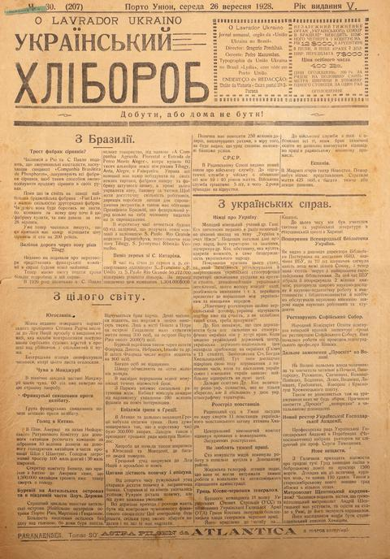
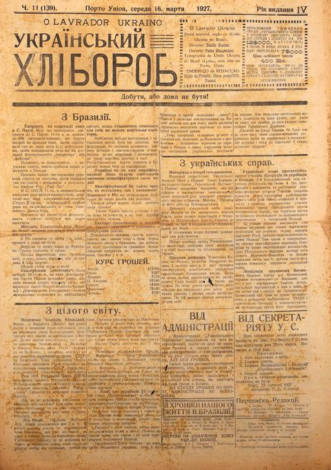

Khliborob Digital Archive
Browse
Search
GPU Documents
Maps & Graphs
Research Agent
About
Research Questions
Persons
Locations
УКР
ENG
PT-BR
DE
Browse
1920s
1927
1928
← Back to archive
Browse issues
1928 — 1 issue

1928-09-26
No. V. 30. (207)
4 pages · 20 locations
1927 — 1 issue

1927-03-16
No. № 11 (139)
4 pages · 51 locations